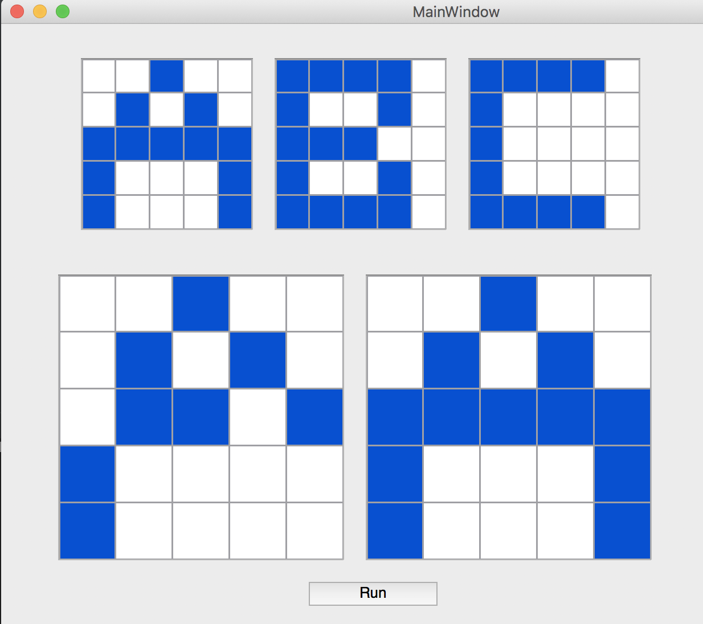

Brief History
In 1949 Donald Hebb wrote a book entitled “The organization of behavior” which pursued the idea that classical psychological conditioning is ubiquitous in animals because it is a property of individual neurons. This idea was certainly not a new one, but Hebb took it a step further.
Donald Hebb hypothesised in 1949 about how neurons are connected with each other in the brain. “When an axon of cell A is near enough to excite a cell B and repeatedly or persistently takes part in firing it, some growth process or metabolic chance takes place in one or both cells such that A’s efficiency, as one of the cells firing B, is increased.
Neurons that fire together, wire together, Neurons that fire out of sync, fail to link
Architecture
There are 2 popular forms of the model for a Hopfield Network.
- Binary neurals with discrete time, updated 1 at a time
- Graded neurons with continuous time
In both of these forms however, the hopfield network consists of a single layer which contains one or more fully connected recurrent neurons.
Weights between the nodes can be represented as a matrix. Where \(W_{ij}\) the weight between the \(i^{th}\) node and the \(j^{th}\) node. The matrix is symmetrical meaning \(W_{ij}\) = \(W_{ji}\) Neurons do not connect to themselves meaning \(W_{ii} = 0.\)
The input and output patterns can be described as discrete vectors, which can be either binary (\(0\),\(1\)) or bipolar (\(+1\),\(-1)\) in nature. In either case a neuron is either ON or OFF. Normally bipolar vectors are used.
Hopfield network is initially trained to store a number of patterns which we would conceive of as memories. The network is then able to recognise any of the learned patterns by exposure to a part of the pattern or even some corrupted information about that pattern.

The number of patterns a hopfield network is able to store is usually around \(0.18 * n\) where \(n\) is the number of neurons. The output of each neuron should be the input of other neurons but not the input of self, i.e any neuron’s output should be calculated from the input of other neurons, but never from itself. Connections should be excitatory as well as inhibitory. It would be excitatory, if the output of the neuron is the same as the input, otherwise inhibitory.
Training a Hopfield Network
There are many systems by which a Hopfield network can be trained but all are based on 1 core idea: the changing of synaptic weights. In general this means that for a given input, the weight for two connected nodes in the same state is increased, but the weight between connected nodes in opposite states is decreased.
A learning rule will have two useful properties - being local and/or being incremental. A rule is local if for every update only the information from the nodes whose weight is updated is used, and incremental if no information about previously learned patterns is required (to learn a new pattern?).
A third very important rule is the capacity, which is the number of patterns per neuron that the network can 'remember'. The most commonly used learning rule for Hopfield networks is Hebbian learning, which was devised by Donald Hebb in 1949. Hebbian learning is defined by the following formula: $$W_{ij} = \frac{1}{N} \sum_{\mu = 1}^{p} \epsilon_{i}^{\mu} \epsilon_{j}^{\mu}$$
Therefore, Hebbian learning consists of setting the new weight between nodes \(i\) and \(j\) to the average product of the states of these two nodes.
First we need a number of patterns to impress onto our network. Let’s say our network has \(n\) number of nodes, and we have \(m\) different patterns. We can turn each pattern in a column vector where \(P_{1i}\) represents the state of neuron \(i\) in pattern 1. \(P\) is our pattern matrix. If we want to calculate our Weight Matrix (\(W\)) we simply perform the following calculation: $$W = PP^T - mI$$ \(W\) represents our weight matrix. \(P\) represents our Pattern matrix. \(P^T\) represents our Pattern matrix transpose. \(I\) represents the identity matrix. \(mI\) represents the identity matrix multiplied by the number of patterns we want to store.
We subtract \(mI\) to give us the rule of \(W_{ii}\ = 0\) Traditionally we then divide W by the number of patterns to get a weight matrix with values ranging from (\(-1\) to \(1\)) if our nodes are bipolar. Why does this work? Imagine it like this:
\(W_{ij}\) represents the weight between node \(i\) and node \(j\). By performing this calculation is mathematically represented as $$W_{ij} = (kmP_{ki} \times P_{kj}) \over m$$ If we assume we only have 1 pattern, \(W_{ij} = P_{i} \times P_{j}\).
If \(P_{i}\) and \(P_{j}\) are the same \(W_{ij} = 1 \).
If \(P_{i}\) and \(P_{j}\) are different \(W_{ij} = -1 \)
Now what this means is that our weight matrix when we only have 1 Pattern represents for \(W_{ij}\) that node \(i\) and node \(j\) are either the same in this pattern or different. This follows closely the theory of neurons that Hebb talked about.
When we have multiple patterns we simply average the values from the different patterns. This also works because now we won't necessarily get binary values but instead continuous values for our weight matrix. This time \(W_{ij}\) represents how often values are the same or different. If \(W_{ij}\) was close to 1 the would mean more often than not, nodes \(i\) and \(j\) are the same, if \(W_{ij}\) was close to -1, that would mean more often than not the values of nodes \(i\) and \(j\) were different. And if it equals 0 that means there's not really any link between the 2. This also means that the value of one node tells us nothing about the probably value of another node
Running a hopfield network
Synchronously
Once we have our weight matrix we can set our nodes to any value we want. Remember we can represent our nodes as a column vector where \(X_{i}\) represents the excitation of the i^{th} node. We want to update our nodes to a new value, preferably closer to one of our impressed patterns. This is easy to do synchronously. Let \(X_{t}\) = the node vector at time t $$X_{t} = W_{X_{t-1}}$$ And that's it. Actually that's not it. This might not and probably won't give X_{t} a bipolar value and our nodes have to be bipolar in this model. Therefore we use a sign function which simply returns \(-1\) if negative (\(< 0\)) and \(1\) if positive (\(>= 0\)). (Use a function to return a value in the form we want?) $$X_t = sign(W_{X_{t-1}})$$ Why does this work?
We already know our weight matrix is full of continuous values from -1 to 1 representing how often certain nodes are the same or different. (For an example, let’s follow?) Lets follow the calculation for a particular node \(i\). Since were looking at a particular node, we can forget a lot of the calculations. All we care about now is the \(i\)th row of the weight matrix \(W_i\) multiplied by the nodes. *Then the sign function
When we calculate the value for node \(i\) what's really happening is we’re multiplying the value of each node by the value that represents the connection between that node and node \(i\), summing them up then working out if the total value is negative or positive.
Let's say that the connection between 2 different nodes was close to 1. Aka if one node has a certain value, according the patterns the second node probably has the same value, if the weight was closer to -1 then if one node has a certain value, according to the patterns the second node probably has a different patterns.
Let’s say we take node \(j\) during the calculation for the new value for node \(i\). We multiply the value of node \(j\), \(X_j\) by \(W_{ij}\) if \(W_{ij}\) is 1 or close to 1 then \(X_j = X_j + W_{ij}\) where as if \(W_{ij}\) is close to -1 \(X_j = W_{ij}-X_j\) This makes sense, because now if \(W_{ij}\) was close to one then by adding \(X_{j}\) to the sum were gonna make it more likely that \(X_i\) value is the same as \(X_j\) which is what the pattern says should happen, where as if the value of \(W_{ij}\) is different then by adding \(-X_j\) to the sum we are gonna make \(X_i\) more likely to be opposite to \(X_j\) which again is perfect.
So essentially to calculate the value of \(X_i\) we go through each nodes value, use to weight matrix to work out the relationship between the 2 nodes \(i\) and \(j\), then add all the values to a sum, average them and we should get a value that represents what \(X_i\) most probably should be based on all the other nodes.
This actually gets very close to achieving the rule Hebb realised in animals - “neurons that fire together link, neurons that fire out of sync, fail to link”.
Energy function and Capacity
If we have a network with weights W and biases for any possible state of our nodes we can calculate an energy function of the state: $$-\frac{1}{2} \sum_{i,j}w_{ij}s_{i}s_{j} - \sum_{i}\theta_{i}s_{i}$$
When we run our algorithm very every single stage we either cause the Energy function to stay the same or to decrease. Therefore the task of of running the algorithm is like trying to find the minimum of this energy function.These minimums represent the state of one of our training data. Sometimes due to our training data we can end up with a local minimum that is not a training data but because our algorithms wont increase the energy function we can’t escape and this leads to hallucinations.
For example for every pattern \(x\), \(-x\) is a hallucination, we don’t normally care about those as the pattern is just inverted. (A hallucination however will always be a pattern we have learned but inverted so normally these are not considered?).
One restriction on a hopfield network is how many patterns we can store before it does not work anymore, in general the number of patterns we can store is around \(0.14 \times n\) where \(n\) the number of nodes in our hopfield network.
Python Implementation of Hopfield Network
The aim of this implementation is to create a program that can reconstruct a given, corrupted pattern to one of 3 other user-defined patterns.
First, we need to define what a pattern is. In this basic implementation, we're limiting patterns to square dimensions. A pattern will have a size attribute and also a corresponding 2D array representing the values of each pixel - either 1 or 0.
Next, we have to connect the GUI to our framework designed above. Lines 20 to 25 define a function that returns a Pattern object based on the user's input (selection of cells in a highlighted grid). Lines 9 to 18 define the function used to retrieve the 3 patterns to store in the memory of the network, and also the given, corrupted pattern to reconstruct. Lines 27 to 32 define a function to visually represent a new pattern in the GUI.
Now we can create a class to encapsulate the operations of the hopfield network. It needs a method to define the initial weight matrix based on the given patterns. We can use numpy to handle matrix operations instead of reimplementing them.
Next, it needs to synchronously run the hopfield network, and update the output grid on the GUI on every update of a neuron. It will continue to update the weight matrix and output pattern until the output matches one of the given patterns, or if it crosses a defined threshold of 1000 for number of neuron updates.
To check if a pattern is found, this simple method can be defined.
The sign function also needs to be defined.
Finally, the network can be initialised like so.
After instantiating a window object and Hopfield object, the program executes as expected:
The full repo for this implementation can be found here.
Boltzmann
A boltzmann machine is a stochastic, generative version of a hopfield network. A Boltzman Machine is essentially what happens when we add extra hidden (in presentation define what we mean by that) nodes into our network that aren’t visible and don’t represent the values of our data but still are used to represent more complication connections between our visible nodes. We did not specifically research Boltzman Machines as the Restricted form that we will discuss following this is much more widely used, but they are mentioned here to help bridge the gap between Hopfield networks as described above and the Restricted Boltzman machines we have looked at in more detail. We won’t go into much more about BMs but they are the link between RBMs and Hopfield networks.
History of RBM
A Restricted Boltzman Machine (RBM) is simply , as the name may imply, a restricted version of a Boltzman Machine. What that means is we take a Boltzman Machine but add the restriction that the network must form a bipartite graph, where visible nodes are only connected to hidden ones and vice versa. RBMs have become more popular than Boltzman Machines because the types of learning rules that can be used are much more efficient and effective.
What that means is we take a Boltzman Machine but add the restriction that the network must form a bipartite graph, where visible nodes are only connected to hidden ones and vice versa. RBMs have become more popular than Boltzman Machines because the types of learning rules that can be used are much more efficient and effective.
Originally invented under the name “harmonium” by Paul Smolensky in 1986, RBMs were popularised by Geoff Hinton and his collaborators after they invented faster learning algorithms for use by RBMs in the mid 2000’s, an RBM is an algorithm useful for dimensionality reduction, classification, regression, collaborative filtering, feature learning and topic modelling.
Architecture of RBMs

RBMs are shallow, two-layer neural nets that constitute the building blocks of deep-belief networks. The first layer of the RBM is called the visible, or input, layer, and the second is the hidden layer.
There is no intra-layer communication – this is the restriction in a restricted Boltzmann machine. Each node is a locus of computation that processes input, and begins by making stochastic decisions about whether to transmit that input or not. (Stochastic means “randomly determined”, and in this case, the coefficients that modify inputs are randomly initialized.)
Each visible node takes a low-level feature from an item in the dataset to be learned. E.g. a pixel in an image.
At each hidden node, each input x is multiplied by its respective weight w. That is, a single input x would have three weights here, making 12 weights altogether (4 input nodes x 3 hidden nodes).
Each hidden node receives the four inputs multiplied by their respective weights. The sum of those products is added to a bias (which forces at least some activations to happen), and the result is passed through the activation algorithm producing one output for each hidden node. $$activation_f(w_1{} * x_1{}) + (w_2 * x_2) + … + bias) = output$$
Because inputs from all visible nodes are being passed to all hidden nodes, an RBM can be defined as a symmetrical bipartite graph.

If these two layers were part of a deeper neural network, the outputs of hidden layer no. 1 would be passed as inputs to hidden layer no. 2, and from there through as many hidden layers as you like until they reach a final classifying layer. (For simple feed-forward movements, the RBM nodes function as an autoencoder and nothing more.)

Important to note that RBMs have two biases: the hidden bias helps the RBM produce activations on a forward pass of data, and the visible layers’ biases help the RBM learn the reconstructions on the backward pass.
Energy Functions and Reconstructions
$$E(v,h) = - \sum_{i \in visible} a_i v_i - \sum_{j \in visible} b_j h_j - \sum_{i,j} v_i h_j w_{ij}$$ Where \(a\) is the visible layers biases, \(b\) is the hidden layers biases. \(V\) is the visible unit, \(h\) is the hidden unit. \(w\) is the weighs between them.
RBMS can be used to reconstruct data by themselves. They do this by making several forward and backward passes between the two layers. Forward pass works normally, In a backward pass the activations in the hidden network become the inputs, multiplied by the same weights but added to new weights (visible layer weights)

Because the weights are randomly initialised the difference between the original data and the reconstruction is often large. We can call this error (the reconstruction error) and is calculated as the difference between the reconstructed data r and the original input. We use backpropagation of this error against the RBM’s weights until an error minimum is reached. A forward pass makes predictions on about node activations. A backward pass guesses the original data causing a certain set of node activations.
Constrative Divergence
For an rbm if we wanted to use Stochastic gradient descent we end up getting an intractable problem. So instead we estimate it by using contrastive divergence.
Contrastive divergence algorithms are referred to as "CD-k", where \(k\) is the number of steps to run block Gibbs sampling for. We normally take \(k=1\) when dealing with RBMs. This is because the (single layer of) hidden neurons cannot interact with each other at all and therefore only 1 step is needed to reach the equilibrium for the hidden neurons given the state of the visible neurons, we can use values higher than 1 and things won't be made worse but it's just wasteful computation since we won't get much better results. In simple terms, contrastive divergence is an implementation of approximate gradient descent. Its used to calculate the gradient between weights and error (reconstruction error).